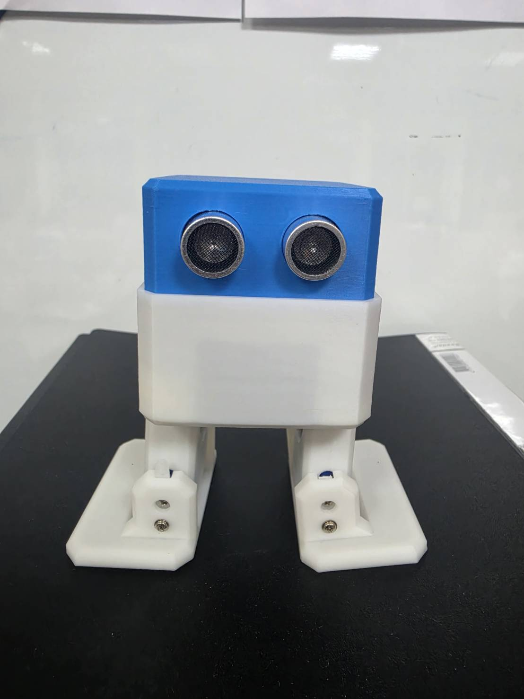
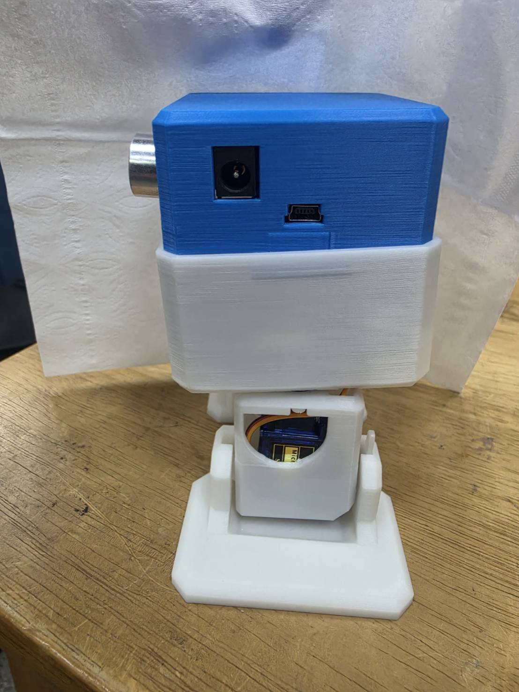
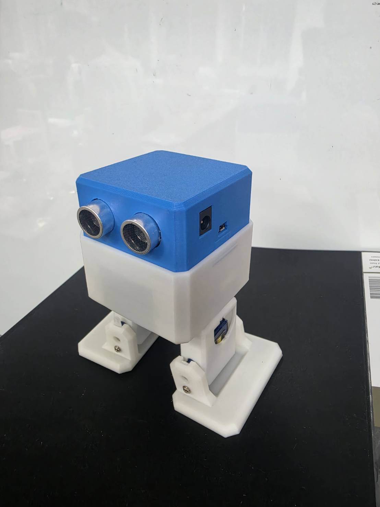
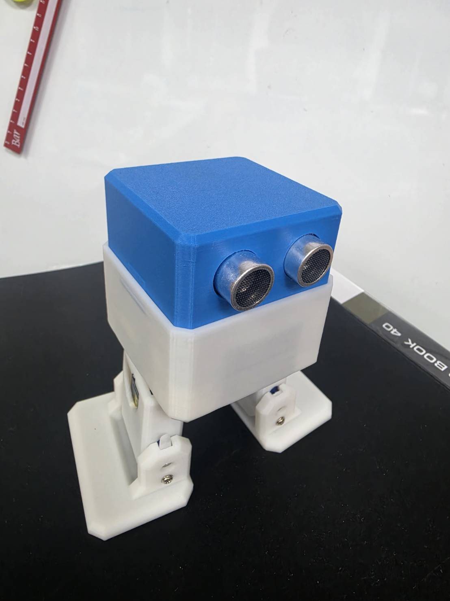

寫程式指揮機器人之前，要先知道它身上有什麼、每個零件叫什麼名字、接在哪支「腳位」。之後對 AI 下指令時，你會一直用到這些名字。
一張你自己看得懂的「OTTO 身體地圖」：每個零件的名字、功能、腳位編號。

👀 超音波眼睛：外圈鋁銀色、裡面黑色的兩個圓筒。它不是裝飾——一邊發出超音波、一邊接收回音，靠「回音多久回來」算出前面的東西有多遠。
🦵 兩條腿：讓 OTTO 左右扭動的關節。
🦶 兩隻腳掌：讓 OTTO 翹腳尖、側身踮腳的關節。
走路的秘密：腿和腳「一扭一翹」配合，OTTO 就一步步往前挪。

🔌 圓形電源孔：接電池盒或變壓器，給馬達吃飽電。
🔗 mini-USB 傳輸孔：CH15 我們就是用傳輸線接這裡，把程式從電腦「灌」進 OTTO。
🔵 藍色小方塊：露出來的伺服馬達本人！每個關節裡都藏著一顆。
一般馬達只會「一直轉」，伺服馬達（Servo）聽得懂「轉到 90 度」「轉到 120 度」這種指令，指哪到哪。OTTO 全身有 4 顆：
| 零件 | 程式裡的名字 | 腳位 | 負責什麼 |
|---|---|---|---|
| 左腿 | PIN_YL | 2 | 左腿左右扭 |
| 右腿 | PIN_YR | 3 | 右腿左右扭 |
| 左腳掌 | PIN_RL | 4 | 左腳翹起 / 壓下 |
| 右腳掌 | PIN_RR | 5 | 右腳翹起 / 壓下 |
| 零件 | 程式裡的名字 | 腳位 | 負責什麼 |
|---|---|---|---|
| 超音波（發射） | PIN_Trigger | 8 | 發出超音波 |
| 超音波（接收） | PIN_Echo | 9 | 接收回音 → 算距離 |
| 蜂鳴器 | PIN_Buzzer | 13 | 唱歌、音效 |
| 大腦 | Arduino Nano | 執行你的程式 | |
#define 腳位設定，寫的就是這些數字。Arduino Nano 是一片超迷你電腦，藏在 OTTO 身體裡。它沒有螢幕鍵盤，只做一件事：不停執行你灌進去的程式。


外殼是 3D 列印的！原廠也提供紙模型和各種造型外殼（熊貓、無敵鐵金剛…），期末可以幫你的 OTTO 換裝。
打開 3D 模擬器，用滑鼠把虛擬 OTTO 轉一圈，找找看：超音波眼睛、四個關節、腿側的藍色伺服馬達——跟真機照片是不是一樣？
下一章 CH02，把上課要用的工具裝齊：AI 助手＋模擬器捷徑，（要上真機的）再裝 Arduino IDE。
本課程與專案僅供阿亮老師課程學員學習使用，禁止修改、轉傳、散布或商業使用。